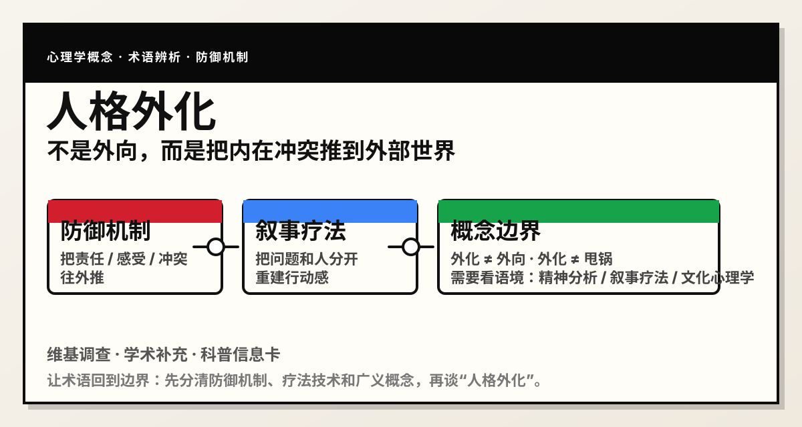

中文维基的“外化”条目将其解释为：把某物放到原始边界外；在弗洛伊德心理学中，它也是一种把内部特征投到外部世界的防御机制。
在叙事疗法里，externalization 是把“问题”从“人”身上分离出来，让人重新和问题建立距离，以便更容易改变。
把自己的感受、冲动或意图看成是别人的。
把内在冲突、责任或问题本身，整体解释为外部因素造成的。
外化是防御机制，常与投射、推诿责任、把内在体验当成外界威胁有关。
外化是一种技术：把问题和人分开，减少羞耻和自责，恢复行动感。
外化也可指心理功能借助外部符号、工具、记号进入外部世界并反过来塑造认知。
失败后优先怪环境、怪别人、怪制度，而不是讨论自己的参与部分。
把愤怒、焦虑、羞耻体验成外部威胁带来的结果。
讲述时总把自己写成被动受害者，问题像是从天而降。
把人际冲突当作“别人都在针对我”，而不是看见自己的互动模式。
| 层面 | 轻度外化 | 长期强化外化 |
|---|---|---|
| 自我理解 | 短期缓解焦虑 | 难以反思自身 |
| 人际关系 | 偶尔推责 | 持续冲突、他人疲劳 |
| 成长 | 可被觉察与修正 | 责任感与行动感下降 |
| 临床意义 | 可作为防御现象理解 | 可能和更复杂的人格问题共现 |
给自己的行为找看似合理的解释，重点在“解释”，不是把问题放到外面。
把情绪从原对象转移到别的对象，重点在“情绪转移”。
把外部规范、语言或经验吸收到内部，形成自己的心理结构。
只是性格外放、表达直接，不等于外化。